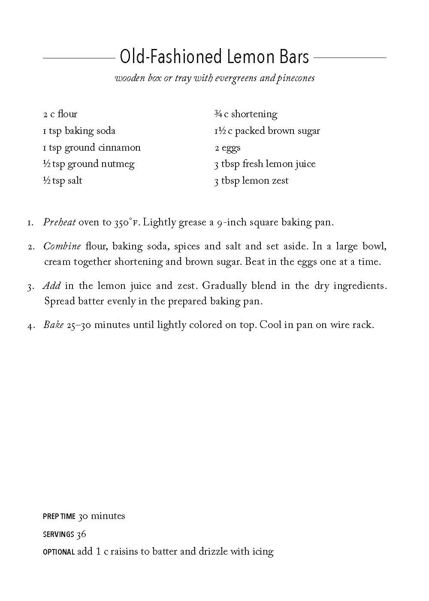

Old-Fashioned Lemon Bars
wooden box or tray with evergreens and pinecones
- 2 c flour
- 1 tsp baking soda
- 1 tsp ground cinnamon
- 1/2 tsp ground nutmeg
- 1/2 tsp salt
- 3/4 c shortening
- 11/2 c packed brown sugar
- 2 eggs
- 3 tbsp fresh lemon juice
- 3 tbsp lemon zest
- Preheat oven to 350°F. Lightly grease a 9-inch square baking pan.
- Combine flour, baking soda, spices and salt and set aside. In a large bowl, cream together shortening and brown sugar. Beat in the eggs one at a time
- Add in the lemon juice and zest. Gradually blend in the dry ingredients. Spread batter evenly in the prepared baking pan.
- Bake 25-30 minutes until lightly colored on top. Cool in pan on wire rack. May be drizzled with a simple confectioners’ sugar icing. Cut into large or small bars.

Another Yummy Recipe